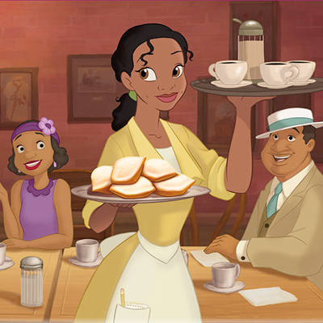

Dans le film Disney « La Princesse et la Grenouille », Tiana est une serveuse rêvant d’ouvrir un restaurant et qui adore faire des beignets ! Paraît-il que ce sont les meilleurs beignets de la Nouvelle Orléans ! Apprend à les cuisiner avec nous !

Les ingrédients
550g de farine
1 sachet de levure
1 pincée de sel
60g de sucre en poudre
1 œuf
1 verre de lait
De l’huile de tournesol
Sucre Glace
La recette
Mélange la farine, la levure, le sel et le sucre dans un grand bol avec une cuillère en bois, comme Ratatouille. Puis creuse un puit et ajoute le lait et l’œuf dedans. Mélange le tout en partant du centre pour avoir une pâte assez collante.
Une fois que tu obtiens une grosse masse, transfère-la sur le plan de travail fariné et forme une boule. Pétris la pâte pendant 5 minutes jusqu’à qu’elle devienne bien homogène.
Ajoute le beurre coupé en petits morceaux petit à petit puis pétris pendant 10 minutes.
Mets la pâte en boule dans un saladier huilé puis couvre avec un film alimentaire pendant 2 heures. Rabats la pâte dans le saladier, recouvre-la et mets-la au réfrigérateur pendant 1 heure.
Fais chauffer de l’huile dans une friteuse, avec l’aide d’un adulte. Tu sauras qu’elle est prête lorsqu’un petit morceau de pâte plongé remonte directement à la surface avec des bulles !
Etale ta pâte au rouleau pour avoir un grand rectangle. Puis découpes-y 24 carrés. Tu n’as plus qu’à plonger 3 carrés à la fois dans l’huile. Laisse cuire jusqu’à ce que le beignet gonfle et prenne une belle couleur dorée.
Egoutte les beignets et place-les sur du papier absorbant. Saupoudre généreusement de sucre glace et bon appétit !